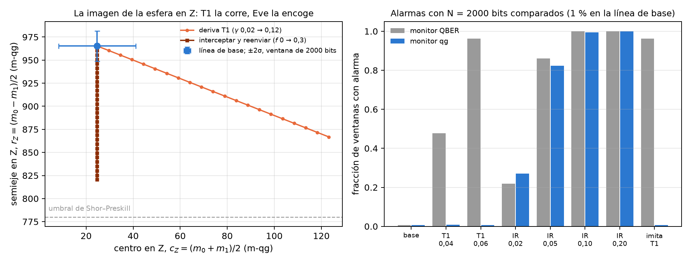
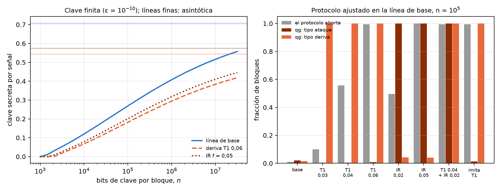
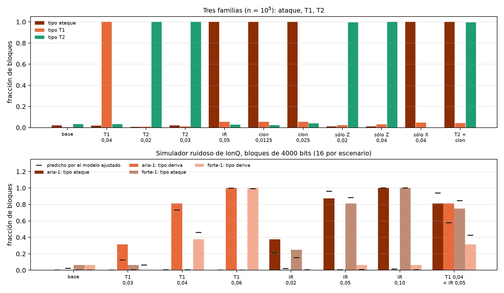

17 Distribución cuántica de claves (QKD) y BB84 en espacio qg
El capítulo 16 dejó la QBER de BB84 del lado de lo que qang lee: es la probabilidad de un qubit, y el umbral de seguridad está en el centro de la escala, en 780 m-qg. Este capítulo la abre. La QBER es un solo número, y un enlace real tiene cuatro: cada estado que Alice envía llega a Bob con su propia probabilidad de error. En la escala del capítulo 1 esas cuatro lecturas dicen dónde quedó la imagen de la esfera de Bloch después del canal, y la forma de esa imagen distingue dos causas que la QBER confunde: una memoria que se degrada y un espía que intercepta. El capítulo dice hasta dónde llega esa distinción, con bloques de clave finitos, con ataques más finos y con el ruido de iones atrapados, y dónde no llega.
17.1 Desde la base: cuatro lecturas y la imagen de la esfera
En BB84 Alice envía \(|0\rangle\) o \(|1\rangle\) (base Z) o \(|+\rangle\) o \(|-\rangle\) (base X); el qubit espera en una memoria o viaja por un canal, y Bob mide. Después del cribado sólo quedan las rondas en que Bob midió en la base de Alice. Para cada estado enviado, la lectura de Bob en su propia base es una lectura del capítulo 1:
\[ m(0)=1000\,(1-2e_{0\to1}),\qquad m(1)=-1000\,(1-2e_{1\to0}), \]
y lo mismo para \(|\pm\rangle\) en X. Un canal ideal da \(\pm1000\). Un canal real lleva la esfera a un elipsoide, y en cada base las dos lecturas dan su centro y su semieje:
\[ c_Z=\frac{m(0)+m(1)}{2},\qquad r_Z=\frac{m(0)-m(1)}{2},\qquad Q_Z=\frac{1}{2}\Big(1-\frac{r_Z}{1000}\Big). \]
La QBER es exactamente el semieje, sin aproximación. La fórmula del índice, \(Q=(1-|qg|)/2\), es el caso simétrico, en que las dos lecturas de una base tienen el mismo módulo; en general \(|m(0)|\neq|m(1)|\), y la diferencia es el centro. La asimetría \(A_Z=qg(0)+qg(1)\) de las notas (§40) es \(2c_Z\): el testigo de T1 del §24.
Las dos causas mueven la imagen en direcciones distintas. La relajación T1 de la memoria es afín, \(z\mapsto(1-\gamma)z+\gamma\): deja \(|0\rangle\) en el polo y levanta \(|1\rangle\), de modo que \(c_Z\) sube y \(r_Z\) baja en la misma cantidad. Un espía que intercepta y reenvía una fracción \(f\) de los qubits, midiendo en una base al azar, encoge la esfera antes de la memoria: \(r_Z\) baja y \(c_Z\) no se mueve, exactamente, porque la memoria afín pone el centro en un lugar que sólo depende de \(\gamma\). En el plano \((c_Z,r_Z)\) la deriva es una recta de pendiente \(-1\) y el espía una vertical (Figura 17.1, izquierda).
El canal de las notas: memoria con \(\gamma_0=0{,}02\) (T1), desfase \(p_0=0{,}01\) y detector asimétrico (\(e_{01}=0{,}005\), \(e_{10}=0{,}01\), calibrado como en el §31).
| escenario | \(m(0)\) | \(m(1)\) | \(c_Z\) | \(r_Z\) | \(r_X\) | \(Q_Z\) | \(Q_X\) | fracción secreta |
|---|---|---|---|---|---|---|---|---|
| línea de base | 990,0 | −940,6 | 24,7 | 965,3 | 955,6 | 1,74 % | 2,22 % | 0,720 |
| deriva T1, \(\gamma=0{,}04\) | 990,0 | −901,2 | 44,4 | 945,6 | 945,8 | 2,72 % | 2,71 % | 0,640 |
| deriva T1, \(\gamma=0{,}06\) | 990,0 | −861,8 | 64,1 | 925,9 | 935,9 | 3,70 % | 3,21 % | 0,567 |
| interceptar y reenviar, \(f=0{,}05\) | 965,9 | −916,5 | 24,7 | 941,2 | 931,7 | 2,94 % | 3,41 % | 0,594 |
| interceptar y reenviar, \(f=0{,}10\) | 941,7 | −892,3 | 24,7 | 917,0 | 907,8 | 4,15 % | 4,61 % | 0,481 |
En una ventana de \(N\) bits comparados, \(N/4\) por estado, el ruido de disparo de \(c_Z\) y de \(r_Z\) es 16,4, 8,2 y 3,7 m-qg para \(N=500\), 2000 y 10 000. Que la memoria pase de \(\gamma=0{,}02\) a \(0{,}04\) mueve el centro 19,7 m-qg: con 2000 bits, 2,4 desviaciones.

17.2 El monitor: deriva o espía
Las notas (§40) comparan dos monitores sobre ventanas de \(N\) bits cribados y comparados, los dos ajustados a 1 % de falsas alarmas en la línea de base:
- monitor QBER: una prueba de una cola sobre el número total de errores;
- monitor qg: una razón de verosimilitud generalizada sobre los cuatro conteos de error, donde “ataque” (\(f>0\)) tiene que ganarle a la vez a “línea de base” y a “deriva T1” (\(\gamma\) libre).
| escenario | QBER, \(N=500\) | qg, \(N=500\) | QBER, \(N=2000\) | qg, \(N=2000\) | QBER, \(N=10^4\) | qg, \(N=10^4\) |
|---|---|---|---|---|---|---|
| línea de base | 0,007 | 0,004 | 0,007 | 0,006 | 0,010 | 0,007 |
| deriva T1, 0,04 | 0,147 | 0,009 | 0,478 | 0,009 | 0,992 | 0,000 |
| deriva T1, 0,06 | 0,463 | 0,009 | 0,962 | 0,006 | 1,000 | 0,000 |
| interceptar, \(f=0{,}02\) | 0,072 | 0,065 | 0,218 | 0,271 | 0,847 | 0,848 |
| interceptar, \(f=0{,}05\) | 0,337 | 0,338 | 0,861 | 0,823 | 1,000 | 1,000 |
| interceptar, \(f=0{,}10\) | 0,821 | 0,730 | 1,000 | 0,994 | 1,000 | 1,000 |
| ataque que imita T1 | 0,463 | 0,009 | 0,962 | 0,006 | 1,000 | 0,000 |
Tres cosas se leen en la tabla.
- La detección es la misma; las falsas alarmas no. El monitor qg detecta al espía ingenuo tan bien como el de QBER, en cada \(N\) y cada \(f\), dentro de la dispersión del muestreo. Cuando la memoria se degrada, el de QBER salta en 48 % y 96 % de las ventanas (\(N=2000\)) y el qg se queda en 0,9 % y 0,6 %, al nivel de la línea de base. La reducción de falsas alarmas vale para la deriva T1, que es la que el monitor qg tiene en su modelo, y no para cualquier degradación.
- El precio, por diseño. Un espía que acopla el qubit a su ancila con una interacción de amortiguamiento produce exactamente los conteos de una deriva T1, porque en el plano \((c_Z,r_Z)\) recorre la misma recta. El monitor qg no lo ve (0,6 %, la misma cifra que la deriva, porque los conteos son idénticos), y el de QBER sí (96 %). Los dos son complementarios: QBER dice “algo cambió”; qg dice “simétrico (como un ataque)” o “como T1 (deriva, o un espía que se esconde en ella)”.
- No hay ganancia de seguridad. La fracción secreta cae igual en los dos casos (0,720 → 0,567 con la deriva a 0,06; 0,720 → 0,594 con \(f=0{,}05\)). Una prueba de seguridad tiene que atribuir todo error a Eve, y la lectura qg no cambia eso.
El escenario es el de un enlace con qubits de materia, o una demostración en un chip, donde el qubit espera con T1 y T2 antes de que Bob mida. En un enlace de polarización de fotones el ruido es casi unital, el centro no se mueve, y la distinción no existe.
17.3 Bloques finitos
Un enlace real corta la clave en bloques. Las notas (§43) usan la cota de clave finita de Tomamichel et al. (2012) sobre el mismo canal:
\[ \ell=n\big[1-h(Q_{\text{tol}}+\mu)\big]-1{,}1\,n\,h(Q_Z)-\log_2\frac{2}{\varepsilon_{\text{sec}}^2\varepsilon_{\text{cor}}},\qquad \mu=\sqrt{\frac{n+k}{nk}\,\frac{k+1}{k}\,\ln\frac{2}{\varepsilon_{\text{sec}}}}, \]
con \(\varepsilon=10^{-10}\), \(n\) bits de clave en Z y \(k\) bits de prueba en X. El protocolo aborta si el error de prueba supera \(Q_{\text{tol}}\); \(k\) y \(Q_{\text{tol}}\) se optimizan para cada \(n\).
| escenario | \(n\) mínimo | \(n=10^4\) | \(10^5\) | \(10^6\) | \(10^7\) | asintótica |
|---|---|---|---|---|---|---|
| línea de base | \(1{,}2\cdot10^3\) | 0,120 | 0,268 | 0,407 | 0,516 | 0,707 |
| deriva T1, 0,04 | \(1{,}6\cdot10^3\) | 0,091 | 0,223 | 0,348 | 0,446 | 0,622 |
| deriva T1, 0,06 | \(2{,}0\cdot10^3\) | 0,068 | 0,182 | 0,294 | 0,383 | 0,544 |
| interceptar, \(f=0{,}05\) | \(1{,}7\cdot10^3\) | 0,079 | 0,201 | 0,318 | 0,410 | 0,575 |
Un bloque de \(10^4\) bits conserva el 17 % de la tasa asintótica; \(10^5\), el 38 %; \(10^6\), el 58 %; \(10^7\), el 73 %. Por debajo de unos \(10^3\) bits no hay clave. La deriva y el ataque cuestan clave por igual.
Dónde entra qg, sin costo de clave. Después de la corrección de errores y su verificación, Bob conoce los bits de Alice: tiene los cuatro conteos de error, es decir las cuatro lecturas, sobre los \(n\) bits de clave, sin revelar nada. Anunciar un bit de alarma cuesta a lo sumo un bit de clave, y los bits de un bloque abortado se descartan igual. Dos razones de verosimilitud anidadas sobre el modelo conjunto (\(\gamma\) y \(f\) libres) dan una bandera “tipo ataque” (error simétrico más allá de cualquier T1) y una “tipo deriva” (T1 más allá de la línea de base, haya o no ataque), cada una con 1 % de falsas alarmas.
Con el protocolo ajustado en la línea de base para \(n=10^5\) (\(k=7609\), \(Q_{\text{tol}}=2{,}67\) %, es decir, abortar si el semieje en X baja de 946,6 m-qg), 400 bloques por escenario:
| escenario | el protocolo aborta | qg: tipo ataque | qg: tipo deriva |
|---|---|---|---|
| línea de base | 0,010 | 0,020 | 0,015 |
| deriva T1, 0,03 | 0,100 | 0,005 | 1,000 |
| deriva T1, 0,04 | 0,557 | 0,005 | 1,000 |
| deriva T1, 0,06 | 0,995 | 0,007 | 1,000 |
| interceptar, \(f=0{,}02\) | 0,495 | 1,000 | 0,043 |
| interceptar, \(f=0{,}05\) | 1,000 | 1,000 | 0,040 |
| deriva 0,04 + interceptar 0,02 | 0,995 | 1,000 | 1,000 |
| ataque que imita T1 | 0,995 | 0,013 | 1,000 |
- Un aborto no dice por qué; qg sí. Con \(10^5\) bits de clave la atribución es casi exacta: todo bloque con deriva, abortado o no, sale como deriva y no como ataque, y todo bloque interceptado sale como ataque, incluida la mitad que no abortó. Con \(n=10^4\) las banderas ya están en 0,97–1,00 (0,81 para la deriva 0,03).
- Un ataque escondido bajo la deriva se ve. Interceptar con \(f=0{,}02\) sobre una memoria con \(\gamma=0{,}04\) levanta las dos banderas en todos los bloques. La prueba de un parámetro de la sección anterior no lo ve: da 0,5 % de banderas de ataque y llama “deriva” al 99 %. El modelo conjunto arregla una debilidad real del §40.
- Aviso temprano. Con \(\gamma=0{,}03\) sólo aborta el 10 % de los bloques, pero la bandera de deriva está arriba en todos: la memoria se puede reparar antes de que el enlace se detenga. Una tendencia de \(Q_Z\) también avisaría; lo que agrega qg es la atribución.

17.4 Más allá de interceptar y reenviar
Las banderas conocen dos familias de error. Visto desde Bob, todo ataque individual es un canal de Pauli \((p_x,p_y,p_z)\), y en la imagen de la esfera un canal de Pauli encoge los ejes sin mover el centro: el semieje en Z se multiplica por \(1-2(p_x+p_y)\) y el de X por \(1-2(p_z+p_y)\). Eso explica la tabla de las notas (§49):
| ataque | \((p_x,p_y,p_z)\) | qué encoge | mismos conteos que |
|---|---|---|---|
| interceptar en las dos bases, fracción \(f\) | \((f/4,0,f/4)\) | Z y X | — |
| clonador óptimo de fase covariante, perturbación \(D\) | \((0,D,0)\) | Z y X | interceptar con \(f=4D\) |
| interceptar sólo en Z, fracción \(f\) | \((0,0,f/2)\) | sólo X | deriva T2, \((1-2p')=(1-2p_0)(1-f)\) |
| interceptar sólo en X, fracción \(f\) | \((f/2,0,0)\) | sólo Z | ningún ruido natural |
El desfase T2 también encoge sólo el eje X. De ahí la tercera familia: con \(n=10^5\), \(k=7609\) y 400 bloques, el modelo agrega una familia de desfase y tres banderas anidadas de una cola: tipo ataque, tipo T1 (\(\gamma>\gamma_0\)) y tipo T2 (\(p>p_0\)).
| escenario | tipo ataque | tipo T1 | tipo T2 | modelo de dos familias: ataque |
|---|---|---|---|---|
| línea de base | 0,020 | 0,005 | 0,033 | 0,020 |
| deriva T1, 0,04 | 0,018 | 1,00 | 0,033 | 0,015 |
| deriva T2, \(p=0{,}02\) / \(0{,}03\) | 0,007 / 0,020 | 0,01 | 1,00 | 0,075 / 0,268 |
| interceptar, \(f=0{,}05\) | 1,00 | 0,055 | 0,028 | 1,00 |
| clonador, \(D=0{,}0125\) / \(0{,}025\) | 1,00 | 0,055 | 0,02–0,04 | 1,00 |
| sólo Z, \(f=0{,}02\) / \(0{,}04\) | 0,013 | 0,02–0,03 | 1,00 | 0,06 / 0,27 |
| sólo X, \(f=0{,}04\) | 1,00 | 0,048 | 0,000 | 1,00 |
| deriva T2 + clonador | 1,00 | 0,043 | 0,995 | 1,00 |
- La clonación parcial se ve. El clonador óptimo sale como ataque en todos los bloques, igual que interceptar con \(f=4D\), porque Bob ve los mismos conteos. Lo que ninguna estadística de errores muestra es que el clonador le da a Eve más información por error; la tasa de clave, que carga todo error a Eve, ya lo cuenta.
- El modelo de dos familias tenía una falsa alarma. Sin la familia de desfase, la deriva T2 levantaba la bandera de ataque en 7,5 % y 27 % de los bloques. Con la familia, la falsa alarma baja a 0,7–2 % y el veredicto es T2 en todos.
- Un segundo punto ciego, por construcción. Interceptar sólo en Z encoge sólo el eje X, igual que T2: sale como deriva T2 y no como ataque. Es el gemelo del ataque que imita T1: un espía que se esconde en el tipo de error que el hardware produce solo. Interceptar sólo en X no tiene gemelo natural, y se ve siempre.
- Las mezclas se separan: deriva T2 más un clonador levanta las dos banderas.

17.5 En el simulador ruidoso de IonQ
Hasta aquí el canal era analítico. En las notas (§44) cada pieza de BB84 es un circuito corrido en los modelos de ruido aria-1 y forte-1 del simulador de IonQ (gratuito; nada se envió a una QPU), y el modelo detrás de las banderas se ajusta, no se da.
- La memoria es un amortiguamiento construido con una ancila, CRY\((2\arcsin\sqrt\gamma)\) seguido de CX, con \(\gamma_0=0{,}02\) sana y derivas de 0,03 a 0,06.
- Eve mide y reenvía (CX hacia su ancila en Z, H·CX·H en X), sin leer nunca la ancila; una fracción \(f\) de las rondas se toma de esos circuitos.
- Las corridas: 32 circuitos en compuertas nativas, 4 copias de cada uno (12 qubits), 2000 disparos, 4 repeticiones por modelo de ruido. Cada copia es un bloque de \(n=k=4000\) bits.
- El modelo de las banderas es el conjunto (\(\gamma\), \(f\)) más dos tasas simétricas de inversión del dispositivo, \(\varepsilon_Z\) y \(\varepsilon_X\), ajustado dejando fuera cada repetición, con umbrales de un bootstrap paramétrico al 1 %.
El dispositivo agrega un error casi simétrico de 2,3–2,4 % por bit (aria-1) y 2,8–3,1 % (forte-1), sobre todo de las dos compuertas MS del circuito de memoria. En la imagen de la esfera eso es un encogimiento, no un corrimiento. La memoria sana diseñada da \(c_Z=20\), \(r_Z=980\) y \(r_X=990\) m-qg; el simulador da \(c_Z=18{,}5\) y \(20{,}6\) m-qg (aria-1, forte-1), con los semiejes 46–62 m-qg más abajo; con \(\gamma=0{,}06\) el centro sube a 60,5 y 56,5 m-qg, donde el diseño dice 60. El ruido del dispositivo deja el centro en su lugar, que es lo que hace falta para que el testigo de T1 siga funcionando. El ajuste recupera la \(\gamma_0\) diseñada (0,020–0,0225) en todos los pliegues.
| escenario | aria-1 QBER | aria-1 ataque | aria-1 deriva | forte-1 QBER | forte-1 ataque | forte-1 deriva |
|---|---|---|---|---|---|---|
| línea de base | 0,00/0,01 | 0,00/0,00 | 0,00/0,02 | 0,00/0,01 | 0,06/0,00 | 0,06/0,00 |
| deriva 0,03 | 0,56/0,36 | 0,00/0,00 | 0,31/0,12 | 0,06/0,20 | 0,06/0,01 | 0,00/0,06 |
| deriva 0,04 | 0,94/0,93 | 0,00/0,01 | 0,81/0,73 | 0,38/0,75 | 0,00/0,01 | 0,38/0,46 |
| deriva 0,06 | 1,00/1,00 | 0,00/0,00 | 1,00/1,00 | 1,00/1,00 | 0,00/0,00 | 1,00/0,99 |
| interceptar, \(f=0{,}02\) | 0,62/0,58 | 0,38/0,21 | 0,00/0,02 | 0,31/0,38 | 0,25/0,15 | 0,00/0,01 |
| interceptar, \(f=0{,}05\) | 1,00/1,00 | 0,88/0,96 | 0,00/0,01 | 1,00/0,99 | 0,81/0,88 | 0,06/0,01 |
| interceptar, \(f=0{,}10\) | 1,00/1,00 | 1,00/1,00 | 0,00/0,01 | 1,00/1,00 | 1,00/1,00 | 0,06/0,01 |
| deriva 0,04 + \(f=0{,}05\) | 1,00/1,00 | 0,81/0,94 | 0,81/0,58 | 1,00/1,00 | 0,75/0,84 | 0,31/0,42 |
- La atribución se transfiere. Una memoria con deriva nunca se toma por un ataque en aria-1 (0 de 48 bloques), y una vez en 48 en forte-1. Un ataque se toma por deriva en a lo sumo 1 de 16 bloques. Los cambios grandes (deriva 0,06, \(f=0{,}10\)) se atribuyen en todos los bloques.
- Bloques chicos, dispositivo ruidoso. Con 4000 bits y 2–3 % de ruido propio, los cambios chicos se ven en parte: 31–81 % para la deriva 0,03–0,04 y 81–88 % para \(f=0{,}05\). El monitor de QBER ve los cambios tanto o más seguido, pero no dice de qué tipo son.
- El modelo predice qué bandera sube. Casi todas las tasas observadas caen dentro de la dispersión de ±0,12 de 16 bloques; los mayores desvíos están cerca del umbral. Extrapolado con el ruido ajustado a \(n=10^5\), el régimen de la sección de bloques finitos, cada escenario se atribuye bien en 99–100 % de los bloques.
Son modelos de ruido del fabricante en un simulador, no hardware; la memoria y el ataque son circuitos diseñados.
17.6 Lo que queda pendiente
No hay corrida en hardware: el plan de Forte-1 (notas, §46) fue rechazado por el proveedor antes de aceptar el trabajo, y los créditos de IQM disponibles no alcanzan para bloques de \(10^5\) bits. Quedan sin modelar los ataques colectivos y los ataques al detector, y los enlaces de fotones, donde el ruido no mueve el centro. Tampoco hay un módulo qang.crypto (capítulo 16): todo vive en examples/bb84_*.py y examples/ionq_sim_bb84.py.
17.7 Sin qang y con qang
| acción | sin qang | con qang | diferencia |
|---|---|---|---|
| decidir si hay clave | QBER y \(1-h(Q_Z)-h(Q_X)\), o la cota de clave finita | el semieje \(r\) en m-qg; abortar si \(r_X<946{,}6\) | unidad: es la misma cuenta |
| describir el canal | cuatro tasas de error | centro y semieje de la imagen de la esfera en cada base | a favor, modesto: T1 corre el centro, el espía encoge, T2 encoge sólo X; la geometría dice qué modelo hace falta |
| distinguir deriva de espía | QBER total: no puede | razón de verosimilitud sobre los cuatro conteos | a favor, pero la ganancia es del modelo de verosimilitud sobre los conteos por estado; un análisis asimétrico estándar haría lo mismo sin la palabra qg |
| falsas alarmas por deriva T1 (\(N=2000\)) | 48 % y 96 % | 0,9 % y 0,6 % | a favor, con el precio: el ataque que imita T1 pasa (0,6 % frente a 96 %) |
| seguridad | toda falla se carga a Eve | igual | ninguna: la clave no crece |
| ataque escondido bajo deriva | sólo un aborto | las dos banderas, 100 % de los bloques (\(n=10^5\)) | a favor del modelo conjunto |
| ruido de un dispositivo real (simulado) | QBER salta con todo | atribución 0–1 errores en 48 bloques | a favor, con bloques de 4000 bits todavía parcial |
Balance. La contribución propia de la base del capítulo 1 es la geometría: leer las cuatro probabilidades como el centro y los semiejes de la imagen de la esfera dice de entrada qué familias de error se distinguen (las que mueven cosas distintas) y cuáles no (las que encogen el mismo eje). El poder de detección viene de la estadística sobre los conteos por estado, que no necesita a qang. Y la seguridad no cambia: este es un diagnóstico operativo, no una prueba.
17.8 En código
import sys
sys.path.insert(0, "examples")
import bb84_qg_eve_vs_noise as B
e = B.error_probabilities(gamma=0.04) # tasas de error de 0, 1, +, -
m = 1000 * B.qg_per_state(e) # [990.0, -901.2, 950.8, -940.8] m-qg
c_z, r_z = (m[0] + m[1]) / 2, (m[0] - m[1]) / 2
c_z, r_z, (1 - r_z / 1000) / 2 # 44.4, 945.6 y Q_Z = 0.027217.9 Resumen
- En BB84 cada estado enviado tiene su lectura; en cada base, las dos lecturas dan el centro y el semieje de la imagen de la esfera, y la QBER es exactamente el semieje: \(Q=(1-r/1000)/2\).
- La deriva T1 corre el centro y encoge en la misma cantidad; un espía que intercepta encoge sin mover el centro. De ahí que el monitor qg calle ante la deriva (0,6–0,9 % frente a 48–96 %) y vea al espía igual que la QBER.
- Por construcción, un espía que imita T1, o que intercepta sólo en Z (y se parece a T2), sale como deriva.
- Con bloques finitos de \(10^5\) bits la atribución es casi exacta, sin costo de clave, y un ataque escondido bajo una deriva levanta las dos banderas; el simulador de IonQ lo confirma con bloques de 4000 bits, en parte.
- La clave secreta no crece: la lectura qg es un diagnóstico, no seguridad.
Notas bibliográficas
El protocolo BB84 es Bennett y Brassard (2014) (reimpresión del original de 1984), y la prueba de seguridad que liga la QBER con la clave, Shor y Preskill (2000). La cota de clave finita es Tomamichel et al. (2012). Las notas de investigación numeradas (§) que cita el capítulo y los scripts que lo verifican están en el repositorio (Monteverde 2026a); la definición de la unidad qang, en Monteverde (2026b).